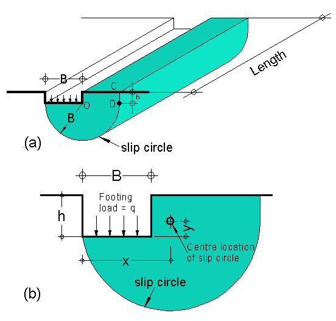

Slip circle theory
Another theory is the slip circle method as shown in Figure 4 (a). With slip circle methods the foundation fails by rotating about some slip surface. The slip surface is taken as the arc of a circle. Almost all foundation failures showing rotational effects. The actual centre of rotation is slightly above the base of the foundation and to one side of it as shown in Figure 4 (b).

Figure 4
This is shown to provide you with some theoretical background knowledge. The derivation of all equations for the different theories is beyond the scope of this subject.
Properties & strength of soils
Properties & strength of soils is shown in the tables below:
|
Table 1
Properties of cohesive clay soils
|
|||||
| Material | State | SPT (No) | CPT (Mpa) | C (kPa) | ABP (kPa) |
| Alluvial clays | soft | 2 - 4 | 0.3 - 0.5 | 20 - 40 | < 75 |
| firm | 4 - 8 | 0.5 - 1 | 40 -75 | 75 -150 | |
| Till and tertiary clays | stiff | 8 - 15 | 1 - 2 | 75 - 150 | 150 - 300 |
| very stiff | 15 - 30 | 2 - 4 | 150 - 300 | 300 - 600 | hard | > 30 | >4 | > 300 | > 600 |
|
Table 2 Properties
of sand
|
|||||
| Packing | RD | SPT (No) | CPT (Mpa) |
|
SBP (kPa) |
| very loose | <0.2 | < 5 | < 5 | < 2 | < 30 |
| loose | 0.2 - 0.4 | 5 - 10 | 2 - 4 | 30 - 32 | 30 - 80 |
| med. Dense | 0.4 - 0.6 | 11 - 30 | 4 - 12 | 32 - 36 | 80 - 300 |
| dense | 0.6 - 0.8 | 31 - 50 | 12 - 20 | 36 - 40 | 300 - 500 | very dense | > 0.8 | > 50 | 20 | 40 | 500 |
| SPT CPT C |
= Standard penetration test = Cone penetration test = Cohesion with respect to total stress |
ABP
SBP |
= Allowable bearing pressure = Angle of internal friction (angle of repose) = Safe bearing pressure |